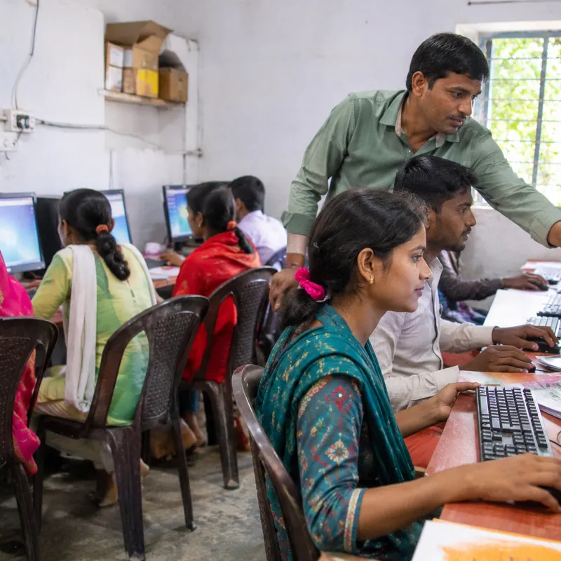

कोर्स › ACS डिजिटल मित्र: बुनियादी कौशल में प्रमाणपत्र › खंड-1: परिचय व बुनियाद
पाठ 1.1: डिजिटल मित्र कौन है: काम, कमाई और भविष्य की सीढ़ी

📚 सब पाठ: किसी भी पाठ पर सीधे जाओ
इस पाठ के बाद तुम बता पाओगे: (1) डिजिटल मित्र कौन होता है, (2) उसके रोज़ के पाँच-छह काम कौन-से हैं, (3) कमाई किन रास्तों से आती है, (4) यह काम गाँव-क़स्बे में क्यों बढ़ रहा है, (5) आगे की सीढ़ी क्या है।
एक दृश्य से शुरुआत
सुबह के नौ बजे हैं। क़स्बे की एक छोटी दुकान पर बोर्ड लगा है — "ऑनलाइन काम यहाँ होता है"। एक काकी आती हैं — बिजली का बिल भरवाना है। एक लड़का आता है — नौकरी का form भरवाना है। एक किसान चाचा आते हैं — योजना की जानकारी चाहिए। इन तीनों की मदद जो व्यक्ति करता है, वही डिजिटल मित्र है — गाँव-समाज और सरकारी-निजी ऑनलाइन दुनिया के बीच का भरोसेमंद पुल।
डिजिटल मित्र है कौन?
डिजिटल मित्र वह प्रशिक्षित व्यक्ति है जो कंप्यूटर, फ़ोन और internet (इंटरनेट) की मदद से लोगों के document (डॉक्यूमेंट — दस्तावेज़) बनाता है, form भरता है, जानकारी दर्ज करता है और ऑनलाइन सेवाएँ दिलवाता है। सरकारी ढाँचे में यह काम data entry (डेटा एंट्री) और digital सेवा-सहायक की भूमिका से जुड़ा है — इसी भूमिका की तैयारी यह कोर्स कराता है।
रोज़ के छह मुख्य काम
- लिखा-पढ़ी के document बनाना — अर्ज़ी, चिट्ठी, resume (रिज़्यूमे), सूचना — Word जैसे software (सॉफ़्टवेयर) में।
- हिसाब-किताब की तालिका — Excel (एक्सेल) में सूची, जोड़-घटाव, रिपोर्ट।
- जानकारी दर्ज करना (data entry) — काग़ज़ की जानकारी को कंप्यूटर में शुद्धता से चढ़ाना।
- ऑनलाइन form व सेवाएँ — नौकरी-आवेदन, प्रवेश-form, बिल-भुगतान, टिकट।
- ग्राहक से बातचीत — आदर से सुनना, सही जानकारी लेना, काम समझाना।
- AI (एआई) औज़ारों का समझदार उपयोग — जहाँ मशीन काम तेज़ करे, वहाँ मशीन; जाँच हमेशा इंसान की।
कमाई कैसे होती है?
डिजिटल मित्र की कमाई के तीन आम रास्ते हैं। पहला — सेवा-शुल्क: हर काम (form, print, document) का छोटा तय शुल्क। दूसरा — नौकरी: दुकान, कार्यालय, केंद्र या कंपनी में data entry/कंप्यूटर-सहायक की पगार वाली नौकरी। तीसरा — अपना केंद्र: अनुभव बढ़ने पर अपनी डिजिटल-सेवा दुकान। ध्यान रखो — यह कोर्स हुनर सिखाता है; कमाई की कोई गारंटी-राशि यहाँ नहीं लिखी जाएगी, क्योंकि वह जगह, मेहनत और ग्राहक-भरोसे से तय होती है। जो आँकड़ा जाँचा नहीं, वह हम छापते नहीं — यही ACS का नियम है।
एक दिन की कहानी (काल्पनिक उदाहरण)
मीना (काल्पनिक नाम) क़स्बे में डिजिटल-सेवा केंद्र चलाती है। सुबह उसने दो resume बनाए, दोपहर में दस बच्चों के प्रवेश-form भरे, शाम को पंचायत की सूची Excel में चढ़ाई। हर काम के बाद उसने ग्राहक को रसीद दी और फ़ाइल सही नाम से सहेजी। दिन ख़त्म होते-होते उसका सबसे बड़ा धन था — भरोसा: काकी ने पड़ोसन से कहा, "मीना के यहाँ काम पक्का होता है।" यही भरोसा अगले दिन चार नए ग्राहक लाया।
यह काम बढ़ क्यों रहा है?
सरकार की सेवाएँ, बैंक, पढ़ाई, नौकरी के आवेदन — सब तेज़ी से ऑनलाइन हो रहे हैं। पर गाँव-क़स्बे में हर व्यक्ति के पास न device (डिवाइस — उपकरण) है, न आदत। बीच की यह दूरी ही डिजिटल मित्र का काम-क्षेत्र है। जो जितनी शुद्धता और ईमानदारी से काम करेगा, उसकी माँग उतनी बढ़ेगी।
भविष्य की सीढ़ी
पहली सीढ़ी — सीखने वाला (आज तुम यहाँ हो)। दूसरी — काम करने वाला डिजिटल मित्र (नौकरी या सेवा-केंद्र; असली job की उम्र 18 वर्ष से)। तीसरी — Sr. Digital Business Associate (सीनियर डिजिटल बिज़नेस एसोसिएट) जैसी अगली भूमिका, जिसमें ज़िम्मेदारी और टीम-काम बढ़ता है। चौथी — अपना केंद्र, अपनी टीम। हर सीढ़ी की चाबी एक ही है: शुद्ध काम + अच्छा व्यवहार + रोज़ थोड़ा नया सीखना।
करके देखो (छोटा काम)
काग़ज़ पर अपने गाँव-मोहल्ले के पाँच ऐसे काम लिखो जो लोग ऑनलाइन करवाना चाहते हैं पर ख़ुद नहीं कर पाते। यही तुम्हारी पहली ग्राहक-सूची की झलक है।
तीन आम ग़लतफ़हमियाँ — पहले दिन ही तोड़ो
ग़लतफ़हमी-1: "यह तो बस typing का काम है।" typing एक औज़ार है; असली काम है ग्राहक की ज़रूरत समझना, सही जानकारी लेना, शुद्ध दर्ज करना और समय पर देना। typing तेज़ हो पर समझ कच्ची हो, तो ग़लत form तेज़ी से बनेंगे — बस इतना फ़र्क़ पड़ेगा। ग़लतफ़हमी-2: "शहर में चलेगा, गाँव में नहीं।" सच उल्टा है — ऑनलाइन सेवाओं की सबसे बड़ी प्यास वहीं है जहाँ उन तक पहुँच सबसे कम है; गाँव-क़स्बे का डिजिटल मित्र रोज़ ऐसे काम करता है जिनके लिए लोग पहले ब्लॉक-ज़िला दौड़ते थे। ग़लतफ़हमी-3: "AI आ गया, यह काम ख़त्म।" AI औज़ार बदलता है, ज़रूरत नहीं — काकी को आज भी एक भरोसेमंद इंसान चाहिए जो उनका काम समझे, मशीन चलाए और ज़िम्मेदारी ले। जो डिजिटल मित्र AI को अपना सहायक बना लेगा (पाठ 1.03 से यही शुरू होगा), उसकी क़ीमत घटेगी नहीं, बढ़ेगी।
पहले हफ़्ते की तैयारी-सूची
इस कोर्स से पूरा फल चाहिए तो पहले हफ़्ते ये पाँच इंतज़ाम कर लो: (1) अभ्यास का device — कंप्यूटर मिल जाए तो सबसे अच्छा; न मिले तो फ़ोन से भी हर पाठ चलेगा (हर पाठ में फ़ोन-रास्ता दर्ज रहेगा)। (2) एक अभ्यास-कॉपी — हर पाठ का "करके देखो" और अपनी ग़लतियों की सूची इसी में। (3) रोज़ का तय समय — 30-40 मिनट, वही घड़ी रोज़; रात में पढ़ने वाले काम-काजी साथी भी इसी कोर्स के उतने ही अपने हैं। (4) एक साथी — भाई-बहन, दोस्त, कोई भी; एक-दूसरे का काम जाँचने से दोनों की शुद्धता चढ़ती है। (5) सब्र — हुनर सीढ़ी है, लिफ़्ट नहीं; रोज़ एक पायदान भी चढ़े तो 109 पाठ बाद तुम वही नहीं रहोगे जो आज हो।
छोटा टेस्ट — 5 प्रश्न
प्र-1. डिजिटल मित्र का सबसे सही परिचय क्या है? (क) सिर्फ़ तेज़ typing करने वाला एक computer-कारीगर (ख) लोगों और ऑनलाइन सेवाओं के बीच प्रशिक्षित पुल (ग) मोबाइल-दुकान पर सामान बेचने वाला एक विक्रेता (घ) सरकारी दफ़्तर में बैठा हुआ एक स्थायी वेतन-कर्मचारी उत्तर: (ख)। कारण: काम का दिल — लोगों की ऑनलाइन ज़रूरत पूरी करना। बाक़ी क्यों ग़लत: (क) typing हुनर है, पूरा परिचय नहीं; (ग) बिक्री का धंधा है, सेवा-भूमिका नहीं; (घ) कोर्स सरकारी नौकरी/वेतन की गारंटी नहीं — मित्र सेवा-कर्मी है।
प्र-2. काग़ज़ की जानकारी कंप्यूटर में शुद्धता से चढ़ाने का नाम क्या है? (क) data entry (ख) painting (ग) printing (घ) charging उत्तर: (क)। कारण: यही data entry की परिभाषा है। बाक़ी क्यों ग़लत: (ग) printing = छापना, चढ़ाना नहीं; (घ) charging = बिजली भरना; (ख) painting का कंप्यूटर-जानकारी से संबंध नहीं।
प्र-3. AI औज़ार के बारे में डिजिटल मित्र का सही रवैया? (क) AI से दूर ही रहो (ख) AI सिर्फ़ शहर वालों के लिए है (ग) AI जो कहे, आँख मूँदकर मान लो (घ) AI से काम तेज़ करो, पर जाँच ख़ुद करो उत्तर: (घ)। कारण: मशीन सहायक है, ज़िम्मेदार इंसान है। बाक़ी क्यों ग़लत: (ग) बिना जाँच ग़लती ग्राहक तक जाती है; (क) दूर रहना पिछड़ना है; (ख) AI गाँव में भी उतना ही काम आता है।
प्र-4. डिजिटल मित्र की कमाई का आधार क्या है? (क) हर महीने एक तय सरकारी वेतन की पक्की गारंटी, काम चाहे जो हो (ख) लॉटरी या इनामी draw से अचानक मिलने वाला पैसा (ग) सेवा-शुल्क, नौकरी या अपना केंद्र — मेहनत व भरोसे से (घ) बिना कोई काम किए हर सौदे पर बँधा-बँधाया commission उत्तर: (ग)। कारण: तीनों असली रास्ते यही हैं। बाक़ी क्यों ग़लत: (क) यह कोर्स किसी वेतन की गारंटी नहीं — झूठा वादा हम नहीं करते; (ख) लॉटरी हुनर नहीं, जुआ है; (घ) बिना काम का पैसा टिकता नहीं, भरोसा खाता है।
प्र-5. असली job (नौकरी-प्रवेश) की न्यूनतम उम्र कितनी है? (क) 10 वर्ष (ख) 14 वर्ष (ग) कोई सीमा नहीं (घ) 18 वर्ष उत्तर: (घ)। कारण: सरकारी QP-दस्तावेज़ में job-entry उम्र 18 दर्ज है; प्रशिक्षण-प्रवेश की उम्र अलग — चालू SOP से। बाक़ी क्यों ग़लत: (क)/(ख) पढ़ने-तैयारी की उम्रें हो सकती हैं, QP की job-उम्र नहीं; (ग) सीमा है, और उसका पालन क़ानून व बाल-सुरक्षा दोनों के लिए ज़रूरी।
अगला पाठ → 1.02: data entry क्या है — हाथ से, मशीन से, मिला-जुला।
वीडियो (Video)
इस पाठ का जाँचा-परखा वीडियो जल्द यहीं जुड़ेगा। तब तक दो जीवित रास्ते:
🎬 YouTube पर इस पाठ के वीडियो खोजें
(दोनों नई खिड़की में; वीडियो बिना भी पाठ पूरा। पढ़ाई कहीं नहीं रुकती।)